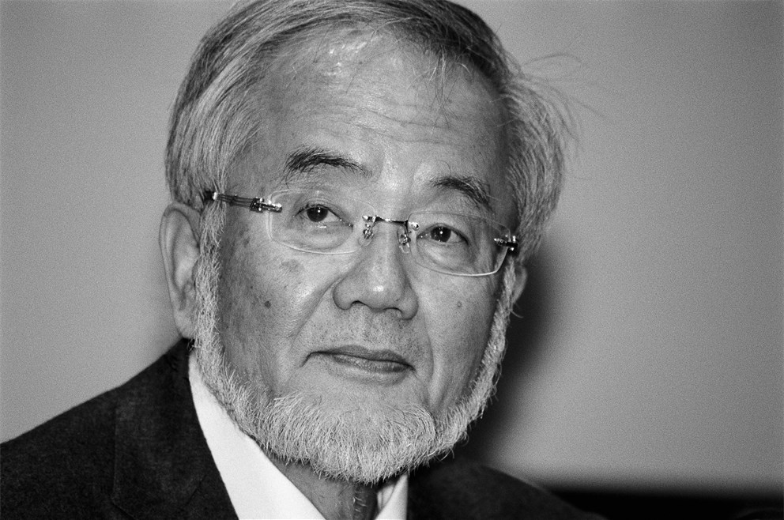

Yoshinori Ohsumi

Photo of Yoshinori Ohsumi
Solo Researcher Nobel Prize Winner
Yoshinori Ohsumi (大隅 良典, Ōsumi Yoshinori, born February 9, 1945) is a Japanese cell biologist famous for receiving the '2016 Nobel Prize for Physiology' for his discoveries on how cells recycle and renew their content, a process called autophagy. Fasting and exercise activate autophagy, which helps slow down the aging process and has a positive impact on cell renewal.
"Life is an equilibruim state between synthesis and degradation of proteins."Visit his WikiPage.